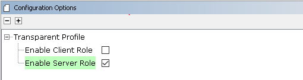

5.1.2.6 BLE Transparent UART with External Flash OTA
Getting Started with Peripheral Building Blocks
BLE Connection --> BLE Transparent UART
Introduction
This tutorial will help users create a peripheral device and send/receive characters between 2 connected BLE devices over Microchip proprietary Transparent UART Profile with External Flash OTA feature enabled. Peripheral device will be WBZ351 Device and Central device can either be a Smartphone with Light Blue App or another WBZ351 Device. To demo external flash OTA feature, the Microchip MBD App should be used. The instructions mentioned below are applicable for a BLE Peripheral device.
Users of this document can choose to just run the precompiled Application Example hex file on the WBZ351 Curiosity board and experience the demo or can go through the steps involved in developing this Application from scratch.
These examples each build on top on one and other. We strongly recommend that you follow the examples in order, to learn the basics concepts before progressing to the more advanced topics.
Recommended Reads
Hardware Required
| Tool | Qty |
|---|---|
| WBZ351 Curiosity Board | 1 |
| Micro USB cable | 1 |
SDK Setup
Software
Smartphone App
Light Blue
- Microchip MBD
Programming the precompiled hex file or Application Example
Programming the hex file using MPLABX IPE
Precompiled Hex file is located in "<Harmony Content Path>\wireless_apps_pic32cxbz3_wbz35\apps\ble\building_blocks\peripheral\profiles_services\peripheral_trp_uart\hex" folder
Follow the steps mentioned here
Caution: Users should choose the correct Device and Tool information
Programming the Application using MPLABX IDE
Follow steps mentioned in of Running a Precompiled Example document
Open and program the Application Example "peripheral_trp_uart.x" located in "<Harmony Content Path>\wireless_apps_pic32cxbz3_wbz35\apps\ble\building_blocks\peripheral\profiles_services\peripheral_trp_uart\firmware" using MPLABX IDE
<Harmony Content Path> how to find what is my Harmony Content Path
Demo Description
Upon programming the demo application, WBZ351 will start Advertising (connectable), central device (Smartphone or another WBZ351) scanning for these advertisements will connect to the device. In case of using Light Blue App search for “Microchip” and connect. After a connection has been made data can be sent back and forth over UART between the two devices that are connected. Demo will print start of the advertisement “Advertising”, connection “BLE Scanning”, “Connected” and “Disconnected” state on a terminal emulator like TeraTerm @ (Speed: 115200, Data: 8-bit, Parity: none, stop bits: 1 bit, Flow control: none). Application Data to be sent to the connected central device (Smartphone or another WBZ351) should be entered in the terminal emulator.
Testing
This section assumes that user has programmed the Application Example on the WBZ351 Curiosity Board Demo Experience when using a Smartphone (Light Blue App) as Central Device
Reset the WBZ351 Curiosity board, Open Terminal emulator like Tera Term, select the right COM port@ (Speed: 921600, Data: 8-bit, Parity: none, stop bits: 1 bit, Flow control: none).
-
Note: The screenshot captured in this document is for the LightBlue app in iOS platform. The LightBlue app usage in the Android platform will be same. The noticeable differences in terms of user interfaces are captured in the later sections.
open Light Blue App on your smartphone, Search and select the advertisement with Device Name "Microchip"

-
Note: There are differences in the user interface of the LightBlue app for iOS and Android platforms.
- In IOS – To receive the data, sent from the central device select “Listen for notifications”
- In Android – To receive the data, sent from the central device select “SUBSCRIBE” button.
To receive data from WBZ351 Curiosity Board (peripheral) device to central device, users need to select the UUID: 49535343-1E4D-4BD9-BA61-23C647249616.

-
Note:
The peripheral device (WBZ351 Curiosity Board) is now connected with Central (Mobile). Now both devices can transfer data to each other using Transparent UART profile.
- In IOS – In the default app settings, the data received at the LightBlue app side will be received in the hex format. User can change this default preference(hex) by clicking on the “Hex” tab at the top right corner and select “UTF-8 String”.
- In Android – In the default app settings, the data received at the LightBlue app side will be received in the hex format. User can change this default preference(hex) by selecting “UTF-8 String” from the drop down option from the “Data format” option.
Enter "test" on Teraterm and data should be displayed on Light Blue App
To send data from central device to WBZ351 Curiosity Board (peripheral), users need to select the UUID: 49535343-8841-43F4-A8D4-ECBE34729BB3 and select write new value
Note: To send data via Transparent UART profile.- In IOS – In the default app settings, the data received at the LightBlue app side will be received in the hex format. User can change this default preference(hex) by clicking on the “Hex” tab at the top right corner and select “UTF-8 String”.
- In Android – In the default app settings, the data received at the LightBlue app side will be received in the hex format. User can change this default preference(hex) by selecting “UTF-8 String” from the drop down option from the “Data format” option.
Enter "trp uart" on App and data should be displayed on Terminal Window
Demo Experience when using another WBZ351 as Central device Users can use another WBZ351 Curiosity Board configured as BLE Transparent UART(central) instead of using a Smartphone App as central device
Developing this Application from scratch using MPLAB Code Configurator
This section explains the steps required by a user to develop this application example from scratch using MPLABx Code Configurator
Tip: New users of MPLAB Code Configurator are recommended to go through the overview.
-
Create a new MCC Harmony Project -- link for instructions
-
Import component configuration --This step helps users setup the basic components and configuration required to develop this application. The imported file is of format .mc3 and is located in the path "<Harmony Content Path>\wireless_apps_pic32cxbz3_wbz35\apps\ble\building_blocks\peripheral\profiles_services\peripheral_trp_uart\firmware\peripheral_trp_uart.X". Users should follow the instructions mentioned here to import the component configuration.
-
Accept Dependencies or satisfiers, select "Yes"
-
Verify if the Project Graph window has all the expected configuration
Verify Advertisement,Connection and Transparent UART Profile Configuration
Select BLE_Stack component in project graph

Select Transparent Profile component in project graph

Generate Code
Instructions onhow to Generate CodeFiles and Routines Automatically generated by the MCC
After generating the program source from MCC interface by clicking Generate Code, the BLE configuration can be found in the following project directories

The OSAL, RF System, BLE System initialization routine executed during program initialization can be found in the project files. This initialization routine is automatically generated by the MCC

The BLE stack initialization routine excuted during Application Initialization can be found in project files. This intitialization routine is automatically generated by the MCC. This call initializes and configures the GAP, GATT, SMP, L2CAP and BLE middleware layers.
Autogenerated, advertisement data format

| Source Files | Usage |
|---|---|
| app.c | Application State machine, includes calls for Initialization of all BLE stack (GAP,GATT, SMP, L2CAP) related component configurations |
| app_ble\app_ble.c | Source Code for the BLE stack related component configurations, code related to function calls from app.c |
| app_ble\app_ble_handler.c | All GAP, GATT, SMP and L2CAP Event handlers |
| app_ble\app_trsps_handler.c | All Transparent UART Server related Event handlers |
| ble_trsps.c | All Transparent Server Functions for user application |
Tip: app.c is autogenerated and has a state machine based Application code sample, users can use this template to develop their application
Header Files
ble_gap.h- This header file contains BLE GAP functions and is automatically included in the app.c file
ble_trsps.h is the Header File associated with API’s and structures related to BLE Transparent Client functions for Application User
Function Calls
MCC generates and adds the code to initialize the BLE Stack GAP, GATT, L2CAP and SMP in APP_BleStackInit() function
APP_BleStackInit() is the API that will be called inside the Applications Initial State -- APP_STATE_INIT in app.c
User Application Development
Include
-
"ble_trsps.h" in app.c, BLE Transparent UART Server related API's are available here
-
"osal/osal_freertos_extend.h" in app_trsps_handler.c, OSAL related API's are available here
-
definitions.h in all the files where UART will be used to print debug information Tip: definitions.h is not specific to just UART peripheral, instead it should be included in all application source files where peripheral functionality will be exercised
-
user action is required as mentioned here
Set PUBLIC Device Address
-
BLE_GAP_SetDeviceAddr(&devAddr);
BLE_GAP_Addr_T devAddr;
devAddr.addrType = BLE_GAP_ADDR_TYPE_PUBLIC;
devAddr.addr[5] = 0xA3;
devAddr.addr[4] = 0xB2;
devAddr.addr[3] = 0xC3;
devAddr.addr[2] = 0xD4;
devAddr.addr[1] = 0xA2;
devAddr.addr[0] = 0xA1;
// Configure device address
BLE_GAP_SetDeviceAddr(&devAddr);Start Advertisement
-
BLE_GAP_SetAdvEnable(0x01, 0);
Connected & Disconnected Events
-
In app_ble_handler.c BLE_GAP_EVT_CONNECTED event will be generated when a BLE connection is completed
Connection Handler
-
Connection handle associated with the peer peripheral device needs to be saved for data exchange after a BLE connection
p_event->eventField.evtConnect.connHandle has this information
Transmit Data
-
Add "APP_MSG_UART_CB" to the generated APP_MsgId_T
Figure 5-11. . 
-
BLE_TRSPS_SendData(conn_hdl , 1, &data); is the API to be used for sending data towards the central device Note: The precompiled application example uses a UART callback to initiate the data transmission upon receiving a character on UART
Example Implementation for Transmitting the received data over UART using the BLE_TRSPS_SendData() API
uint16_t conn_hdl;// connection handle info captured @BLE_GAP_EVT_CONNECTED event
uint16_t ret;
uint8_t uart_data;
void uart_cb(SERCOM_USART_EVENT event, uintptr_t context)
{
APP_Msg_T appMsg;
// If RX data from UART reached threshold (previously set to 1)
if( event == SERCOM_USART_EVENT_READ_THRESHOLD_REACHED )
{
// Read 1 byte data from UART
SERCOM0_USART_Read(&uart_data, 1);
appMsg.msgId = APP_MSG_UART_CB;
OSAL_QUEUE_Send(&appData.appQueue, &appMsg, 0);
}
}
void APP_UartCBHandler()
{
// Send the data from UART to connected device through Transparent service
BLE_TRSPS_SendData(conn_hdl, 1, &uart_data);
}
// Register call back when data is available on UART for Peripheral Device to send
// Enable UART Read
SERCOM0_USART_ReadNotificationEnable(true, true);
// Set UART RX notification threshold to be 1
SERCOM0_USART_ReadThresholdSet(1);
// Register the UART RX callback function
SERCOM0_USART_ReadCallbackRegister(uart_cb, (uintptr_t)NULL);
else if(p_appMsg->msgId==APP_MSG_BLE_STACK_LOG)
{
// Pass BLE LOG Event Message to User Application for handling
APP_BleStackLogHandler((BT_SYS_LogEvent_T *)p_appMsg->msgData);
}
else if(p_appMsg->msgId==APP_MSG_UART_CB)
{
// Pass BLE UART Data transmission target BLE UART Device handling
APP_UartCBHandler();
}
Receive Data
-
BLE_TRSPS_EVT_RECEIVE_DATA is the event generated when data is sent from central device
-
Users need to use the BLE_TRSPS_GetDataLength(p_event->eventField.onReceiveData.connHandle, &data_len; API to extract the length of application data received
-
BLE_TRSPS_GetData(p_event->eventField.onReceiveData.connHandle, data); API is used to retrieve the data
Tip: BLE_TRSPS_Event_T p_event structure stores the information about BLE transparent UART callback functions
Example Implementation for printing the received data from central device over UART
Users can exercise various other BLE functionalities by usingBLE Stack API
External Flash OTA DFU Feature Addition
This feature is using SST26VF064B External flash. WBZ351 Curiosity Board is built with SST26VF064B External flash. If the other external flash is in use, extra code modification in the middleware is required to replace the SST26VF064B flash driver.
Copy below items from the buckland 2nd bootloader project to path of peripheral_trp_uart\firmware\peripheral_trp_uart.X:
- java_256r1_key.pem
- java_384r1_key.pem
- autoload.py
- buckland2ndBootloader.X.production.signed.hex
the prebuilt hex of the buckland bootloader
Open the project and check if "autoload.py" exists in the Script Files folder in MPLAB project setting.
Add the 2nd bootloader hex file as a loadable file from the project property page.
Adding the external flash OTA feature via MCC:
- Add OTA profile and OTA service(see
circle 1)
Enable SErver Role.
- Add the external flash and QSPI driver(see
circle 4)
Set QSPI_BAUD_RATE from 0 to 32,000,000.
- Uncheck the option of "PDS_USES_BOOT_FLASH"
So the PDS will not occupy boot flash, which is then occupied by the 2nd bootloader.
- Add "BLE OTA APP SERVICE" component(see
circle
2)
Adding "BLE OTA APP SERVICE" will automatically include the dependencies like RCON, APP_TIMER_SERVICE and "Device Information Serive". The firmware revision should be set correctly.
- Configure "BLE OTA APP
SERVICE"
Enable Flash Image ID and set to 0x9E000003 which is the same as the one set in project setting(see link below)
Enable Image Decryption and set the AES Key and Init Vector to the same values set in project setting(see link).
This will automatically add dependencies of wolfCrypt Library and LIB_WOLFCRYPT''(see circle 3). Make sure to enable AES-CBC mode.
- BLE_Stack component setting- DFU module enabling external flash
This module generates the code needed for device firmware upgrade middleware for writing the OTA image into External Flash.
- Generate code by MCC Instructions on how to Generate
Code
After generating the code from MCC tool by clicking Generate button, below is the project folder structure.
OTA Application Devevelopment
- Compile MCC auto generated project
- Compile the MCC auto generated project as below.

- Addressing the mandatory error (if not already done): User action required in app_user_edits.c. Follow the steps mentioned in the note and do the necessary changes. Then comment the #error message as below.
- Compile the MCC auto generated project as below.
- Call BLE OTA Init function in "app.c" and
add the include
file.
APP_OTA_HDL_Init(); (see line 155)
#include "app_ota/app_ota_handler.h"
- Call BLE OTA event handler function in
"app_ble/app_otaps_handler.c".
APP_OTA_EvtHandler(p_event);
#include "../app_ota/app_ota_handler.h"
- Uncomment timer message ID's in "app_timer/app_timer.c" needed for OTA error handling and reboot timer. When the timer is fired, the related message is posted in freeRTOS application task queue.
- Define the timer message ID's in
APP_MsgId_T structure in
"app.h".
APP_TIMER_OTA_TIMEOUT_MSG,
APP_TIMER_OTA_REBOOT_MSG,
- Call OTA timer handlers in APP_Tasks() in "app.c".
- Call DIS service Init function in "app.c"
and add the include
file.
BLE_DIS_Add();
#include "ble_dis/ble_dis.h"

- Call BLE gap connected/disconnected event
handler in "app_ble/app_ble_handler.c" . app_ble_conn_handler.c handles the events and
also restarts the Advertising when
disconnected.
APP_BleGapConnEvtHandler(p_event);
#include "../app_ble_conn_handler.h"
- If the "Standby Sleep mode" low power functionality is enabled in the application, during
the OTA upgrade procedues, it is required to disable the device entering into sleep mode.
Add the below check in app_idle_task() when the BT_SYS_EnterSleepMode() is
called.
if (APP_OTA_HDL_GetOTAMode() != APP_OTA_MODE_OTA)
BT_SYS_EnterSleepMode(RTC_Timer32FrequencyGet(), RTC_Timer32CounterGet()); - Compile the project for no
errors.
No error should be found in this step.
Create a bin File for OTA DFU
- Open the MPLAB project properties
- Make sure the FW version is consistent between ble_dis.h and FW_IMG_REV in Header of
project
properties.
check "Header" settings tab:
- set OTA
setting
Make sure the setting items are consistent with the MCC component of "BLE OTA APP SERVICE" in the above step
- Click "Create OTA File" to generate the OTA bin file
OTA DFU Demo
The below BLE OTA demo steps are common for any application implementing OTA functionality.
- program the precompiled Hex as step above
- power up and the output of curiocity board should
be:
The string of "Recreated hash, Jump to App" is the output from the 2nd bootloader during booting.
The string of "Firmware Revision..." is output from the Application firmware. - Open MBD APP
Click "OTA DFU" icon.

- Connect the curiosity
board
Pairing is required during connection.

- Select the Image for the
OTA
The images here are created in the above step
- OTA Firmware revision confirmation

- OTA done

- The DFU is conducted by the 2nd bootloader after curiosity board
reset
The string of "Found Unauthenticated … Jump to App" is the output from the 2nd bootloader during DFU and booting.
The new 1.0.0.1 revision Application firmware is booted successfully.
Where to go from here
Advanced Application (BLE Sensor App) - BLE Sensor App utilizes the Transparent UART building block